by Gerald Dalley
April 2008
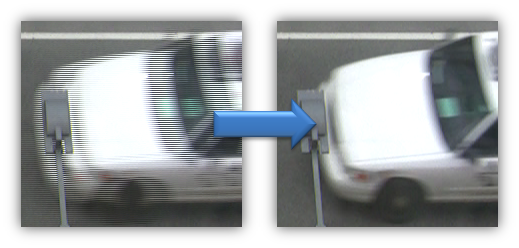
For this camcorder, (a) whole 1920x0180 progressive video frames are captured at 24 frames per second, then they are (b) scaled down to 1440x1080, (c) broken up into fields, (d) processed with 2-3 pulldown, and (e) encoded using an AVCHD codec. This means the video is stored as if it were 60 fields-per-second, interlaced (60i) using a somewhat new and very complex encoding.
If one were to simply decode this video and use it as-is, 3 out of every 5 frames would have interlacing artifacts in them and the comb artifacts for these frames will be roughly twice as bad as they would be had the video been captured as true 60i. When processing videos in Matlab, one often would much prefer recovering the original 24p frames.
To recover the original progressive frames, one must perform something called "pulldown removal", "reverse pulldown", "inverse pulldown", "inverse telecine", or "ivtc". Unfortunately, this is not a trivial task.
In this document we describe the easiest robust solution we have found for pulldown removal. The specific details may need to be adjusted for the user's videos that are not obtained from a Canon HG10 or similar camcorder. This method will only work on Windows with 32-bit applications (unless you can find or build 64-bit ports of AviSynth, DeComb, and FDecimate). Feel free to experiment and to tweak the instructions to try using ffdshow for decoding instead of CoreAVC.
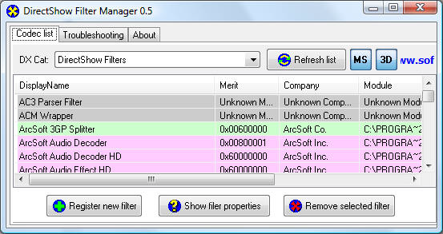
Find the "Haali Media Splitter". Double-click on it to launch the filter properties. If the "Filter merit" is below 0x00800001, then change it to that value and click the "Set new merit" button.
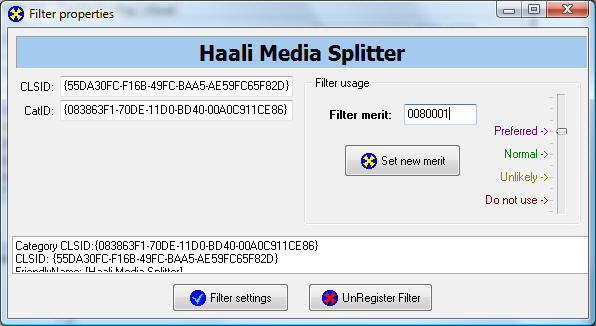
Close the dialog.
The Haali splitter is the only one we know that handles transport streams correctly (ArcSoft, CyberLink, and most others incorrectly report the AVCHD video stream as MPEG2).
Open the filter properties of the "CoreAVC Video Decoder". Press the "Filter settings" button. Place YUY2 as the preferred output format (move that one to the top of the list). The DeComb AviSynth filter requires either YUY2 or YV12 and YUY2 is higher-quality. Change the deinterlacing setting to "None (Weave)". If the deinterlacer is not disabled, it will destroy some of the information we wish to recover. Check "Crop 1088 to 1080". AVCHD videos must have a height that is evenly divisible by 16, so 1080 videos are padded to 1088. This checkbox reverses the padding. Check "Preferred decoder".
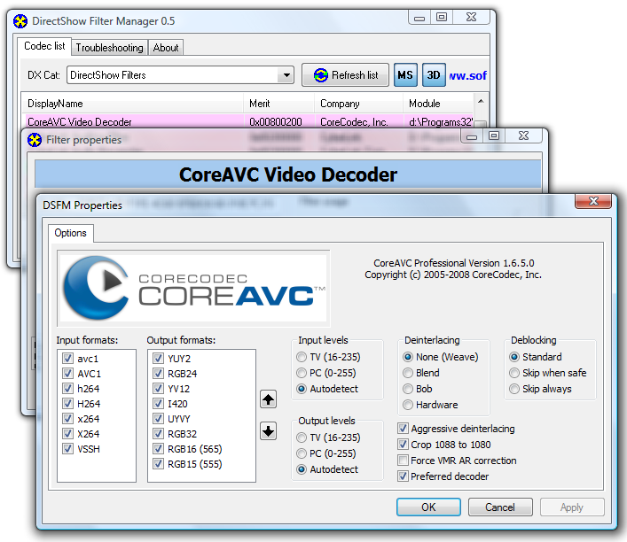
When you dismiss the settings dialog, verify that the filter merit is greater than 0x00800000.
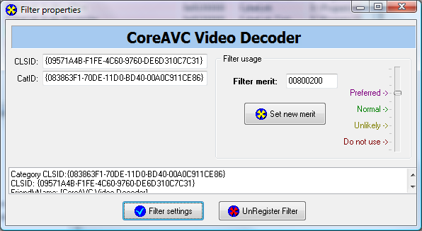
These changes will make CoreAVC the default and have it output non-deinterlaced frames.
Change the "ffdshow Video Decoder"'s merit to something below 0x00800000 (0x00600000 is a good value). We need to make sure that the CoreAVC decoder gets chosen instead of ffdshow. If you want to test ffdshow, just set its merit to be larger than CoreAVC's.
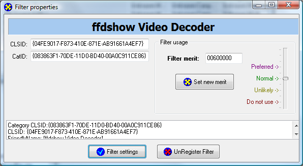
Change the "ffdshow raw video filter"'s merit (not the "ffdshow Video Decoder"'s) to a value larger than 0x00800001. We used 0xFFFF0000.
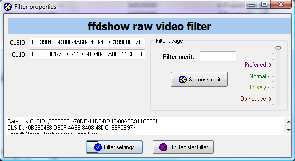
This will cause the ffdshow filter to be automatically inserted whenever a "Video Renderer" is used, such as when troubleshooting in GraphStudio.
If you are using ffdshow for decoding instead of CoreAVC, make sure the raw filter's merit is 0 so it will never be automatically instantiated. The ffdshow decoder will already perform the filtering and we don't want to filter the video twice.
Sometimes the filter merit settings do not take effect without a reboot.
In the DirectShow Filter Manager, open the filter settings dialog for the "ffdshow raw video filter". We will be creating a new preset for these videos so that other videos that use ffdshow will not be affected.
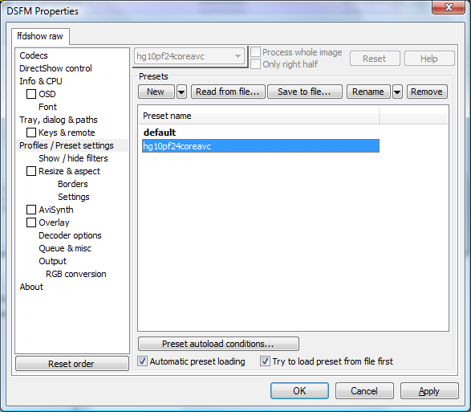
Press the "Preset autoload conditions..." button. Here we will set some heuristics to let the filter know on which videos it should apply the pulldown removal. Adjust these as appropriate for your videos.
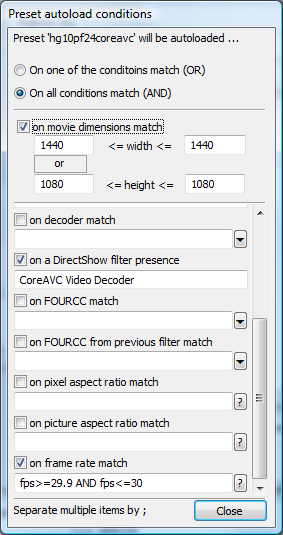
The combination of CoreAVC and ffdshow often result in the video being rescaled and letterboxed if care is not taken. We can prevent the resizing from happening by forcing the size to be what we want (1440x1080).
On the right pane in the top left corner, make sure that "hg10pf24coreavc" is selected (instead of "default" or some other profile).
The properties box should look like this:
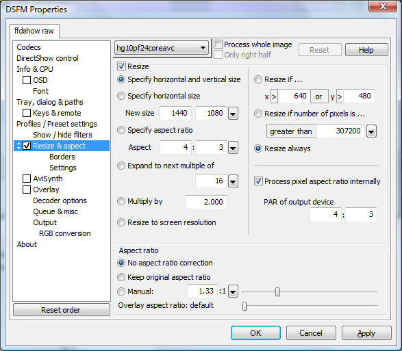
Our white treeview on the left of the dialog is likely simpler than yours since we removed most of the filters using the "Show / hide filters" option. This is purely a personal preference (unless you wish to use those filters).
We are now finally ready to configure the pulldown removal. We assume that the AviSynth and the DeComb and FDecimate filters have been installed as previously described.
# Tell AviSynth it's a 30fps source. It doesn't matter if it's# really an NTSC 29.97fps source. The rates are only used# internally.AssumeFPS(30)# Assume that the top field is first (bottom first is very rare)AssumeTFF()# Use the DeComb filter without extra postprocessing in 2-3# pulldown reversal mode. This will reconstruct 30fps progressive# frames. For clean sources, every 5th frame will be a duplicate.Telecide(guide=1,post=0)# Drop the duplicate frames. For clean sources, every 5th frame# will be dropped because 30/(30-24)=5.FDecimate(rate=24,show=false)
The dialog should now look like this (shown with the script comments removed):
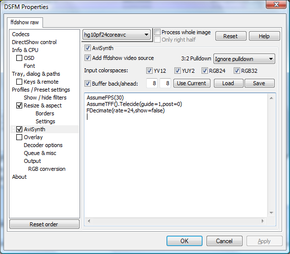
Feel free to explore the rest of the ffdshow options as desired. Note that turning on the onscreen display ("OSD" in the left white treeview) can sometimes confuse for the DeComb filter.
Before testing videoIO, it is useful to test the configuration with GraphStudio. Launch GraphStudio and load the tests/hg10-pf24-clip2.mts clip.
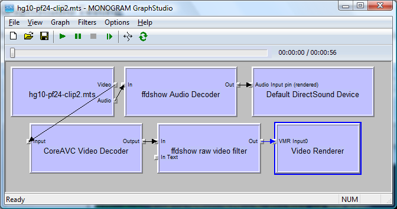
If you are using CoreAVC, make sure that that filter is instantiated as well as the "ffdshow raw video filter".
If instead you are using the "ffdshow Video Filter", make sure that the raw filter is not also instantiated.
Press the play and/or single step buttons to view the results. You should see a clean video without any comb artifacts like those in the image at the very top of this article.
Launch Matlab and try running the following code:
% The file of interest is in the tests/ directorycd(fullfile(videoIODir, 'tests'));file = 'hg10-pf24-clip2.mts';% Here's an early frame that shows combingframeNum = 125;% Original video without pulldown removalvrOrig = videoReader(file, 'preciseFrames',-1);% With pulldown removalvrIvtc = videoReader(file, 'preciseFrames',-1, ...'dfilters','ffdshow raw video filter');% show the frame of interest in the original videoseek(vrOrig, frameNum)figure(1); imshow(getframe(vrOrig)); title('with combing');% show the equivalent frame after removal (w/ framerate conversion)seek(vrIvtc, frameNum*4/5)figure(2); imshow(getframe(vrIvtc)); title('pulldown removed');% cleanupvrOrig = close(vrOrig);vrIvtc = close(vrIvtc);
There should be a very obvious difference between the two figures when looking at the gray car.
Note that with version 1.6.2.5 of CoreAVC, 'preciseFrames',-1 must be used in the videoReader constructor because seeking is partially broken. The CoreAVC team is working on fixing this issue, so future versions are likely to work.
For more information on reverse pulldown, see: